Stoichiometric Analysis¶
Preliminaries¶
A network of  chemical species and
chemical species and  reactions can be described by the
by stochiometry matrix 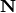. 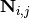 is the net number of
species
reactions can be described by the
by stochiometry matrix 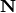. 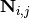 is the net number of
species  produced or consumed in reaction
produced or consumed in reaction  . The dynamics of the network are
described by
. The dynamics of the network are
described by

where 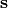 is the vector of species concentrations, 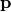
is a vector of time independent parameters, and  is time.
is time.
Each structural conservation, or interchangably, conserved sum (e.g. conserved moiety) in the network coresponds to a lineraly dependent row in the stoichiometry matrix .
If there are conserved sums, then the row rank, 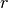 of  is 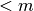, and
the stochiometry matrix may first be re-ordered such that the first are linearly
independent, and the remaining 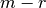 rows are linear combinations of the first
rows. The reduced stochiometry matrix 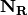 is then formed from the first
rows of . Finally, may be expressed as a product of the 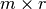
link matrix
is 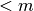, and
the stochiometry matrix may first be re-ordered such that the first are linearly
independent, and the remaining 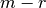 rows are linear combinations of the first
rows. The reduced stochiometry matrix 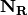 is then formed from the first
rows of . Finally, may be expressed as a product of the 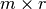
link matrix  and the 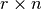 matrix:
and the 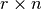 matrix:
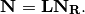
The link matrix has the form
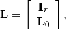
where 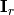 is the 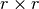 identity matrix and 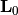 is a 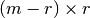 matrix.
Methods¶
The following methods are related to the analysis of the stoichiometric matrix.
| ExecutableModel.getStoichiometryMatrix() | Returns the current stoichiomentry matrix, a 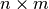 matrix where is the number of species which take place in reactions (floating species) and is the number of reactions. |
| RoadRunner.getLinkMatrix() | Returns the full link matrix, L for the current model. The Link matrix is an m by r matrix where m |
| RoadRunner.getNrMatrix() | Returns the reduced stoichiometry matrix, 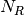, which wil have only r rows where r is the rank of |
| RoadRunner.getConservationMatrix() | Returns a conservation matrix 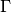 which is a 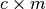 matrix |
| RoadRunner.getL0Matrix() | Returns the L0 matrix for the current model. The L0 matrix is an (m-r) by r matrix that expresses |
| ExecutableModel.getNumConservedMoieties() | Returns the number of conserved moieties in the model. |
| ExecutableModel.getConservedMoietyIds([index]) | Returns a vector of conserved moiety identifier symbols. |
| ExecutableModel.getConservedMoietyValues([index]) | Returns a vector of conserved moiety volumes. |
| ExecutableModel.setConservedMoietyValues(...) | Sets a vector of conserved moiety values. |